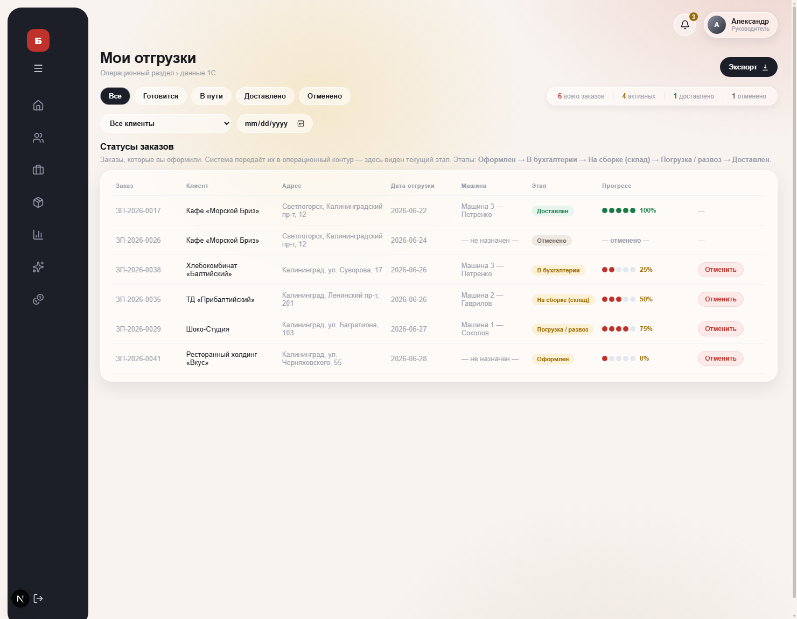

feat/my-shipments-filters · Closes #433 · designer's video comment + §10.
Before
The client column could only be sorted by clicking it — you couldn't pick one.
After
An "All clients" dropdown → picking one leaves only that client's shipments in the table.
Before
Preset buttons: Today / Yesterday / Week / Month.
After
Pick a specific date on a calendar → shipments for exactly that delivery date.
A "Reset" button clears the client and date filters.
Before
A shipment could not be canceled, and there were no canceled orders in the system at all.
After
An active order has a "Cancel" button (owner-only, before delivery). A canceled order gets a gray "Canceled" badge (no progress bar) and shows up under the "Canceled" filter chip.
A delivered shipment cannot be canceled. Neither can someone else's (the owner boundary, same as on "My shipments").
